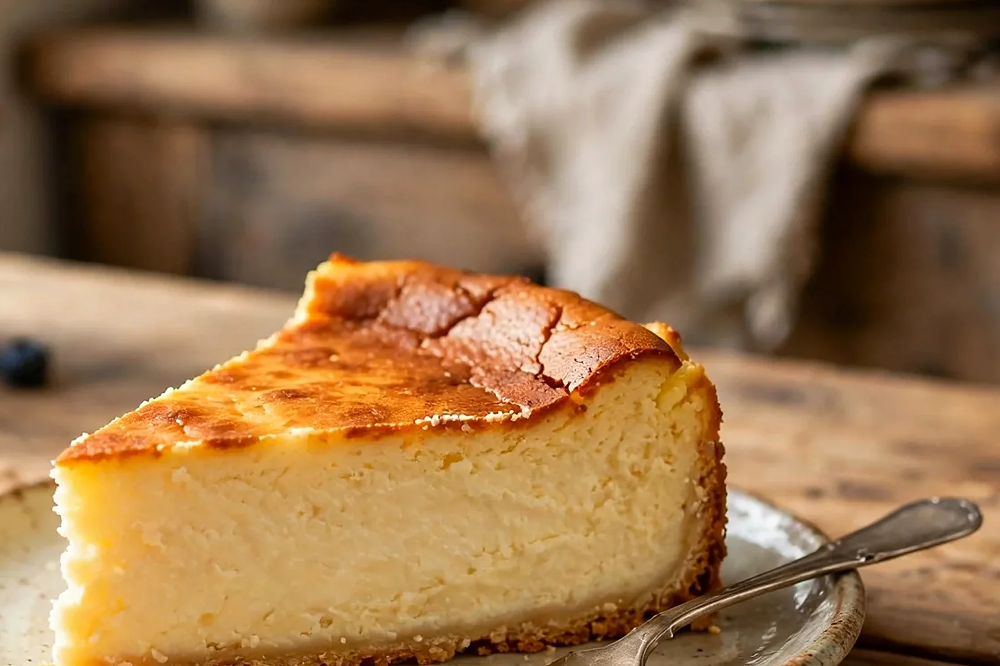

Käsekuchen – cremig, klassisch und mit Mürbeteigboden
Ein Stück Käsekuchen gehört zu jedem guten Kaffeetisch – cremig, nicht zu süß und mit einem Hauch Zitrone. Mit Quark und einem einfachen Mürbeteigboden gelingt er auch ohne viel Übung. Am zweiten Tag schmeckt er bei uns fast noch besser, wenn er denn so lange überlebt.

Inhaltsverzeichnis
Zutaten
Zubereitung
- Für den Mürbeteig Mehl, Zucker, Backpulver und Salz mischen. Butter und Ei dazugeben und rasch zu einem glatten Teig verkneten. In Folie wickeln und 30 Minuten kalt stellen.
- Eine Springform (26 cm) fetten. Den Teig auf leicht bemehlter Fläche ausrollen, die Form damit auskleiden und einen ca. 3 cm hohen Rand formen. Den Boden mehrmals mit einer Gabel einstechen.
- Den Backofen auf 175 °C Ober-/Unterhitze vorheizen.
- Für die Füllung Quark, Zucker, Vanillezucker und Puddingpulver glatt rühren. Die Eier einzeln unterrühren. Milch, Sahne, Öl, Zitronenschale und Zitronensaft dazugeben und alles zu einer glatten, eher flüssigen Masse verrühren.
- Die Füllung auf den Teigboden gießen und den Kuchen auf der mittleren Schiene ca. 60 Minuten backen, bis die Oberfläche leicht goldgelb ist und die Füllung nur noch ganz leicht wackelt.
- Den Ofen ausschalten, die Tür einen Spalt öffnen (einen Holzlöffel einklemmen) und den Käsekuchen im Ofen langsam abkühlen lassen – so reißt die Oberfläche nicht.
- Den Kuchen anschließend mindestens 3 Stunden, am besten über Nacht, im Kühlschrank kalt stellen. Erst dann aus der Form lösen und servieren.

Tipp
Die Füllung ist vor dem Backen sehr flüssig – das ist richtig so, sie wird beim Backen fest. Wer keine Zitrone mag, ersetzt Schale und Saft einfach durch etwas mehr Vanille.
📌 Mehr Rezept-Ideen findest du auf unserem Pinterest-Profil:
Lecker Rezepte auf Pinterest
Lecker Rezepte auf Pinterest